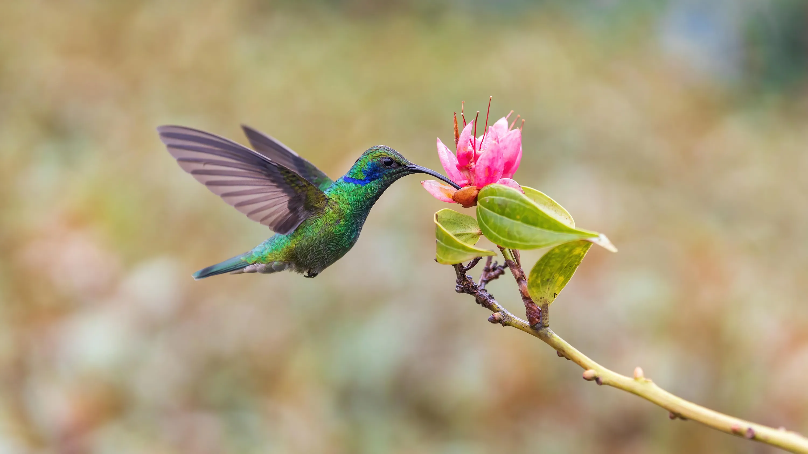

Colibríes
Los colibríes son aves pequeñas, coloridas y extremadamente ágiles, famosas por su capacidad de volar en el mismo lugar y su rápido aleteo.
Características principales
- 📏 Tamaño: De 6 a 13 cm de longitud.
- ⚖️ Peso: Entre 2 y 20 gramos.
- 🛫 Pueden batir sus alas hasta 80 veces por segundo.
- 🔄 Capacidad de volar en todas direcciones, incluso hacia atrás.
- 🌎 Se encuentran principalmente en América, desde Alaska hasta Tierra del Fuego.
Alimentación
Los colibríes se alimentan principalmente del néctar de las flores, lo que los convierte en importantes polinizadores. También consumen pequeños insectos para complementar su dieta.
Especies destacadas
- Colibrí garganta rubí (Archilochus colubris)
- Colibrí abeja cubano (Mellisuga helenae) - El ave más pequeña del mundo
- Colibrí gigante (Patagona gigas)
Curiosidades
¿Sabías que los colibríes tienen el metabolismo más rápido de todas las aves? Para mantener su energía, deben alimentarse casi constantemente.
⬅ Volver a la sección de aves